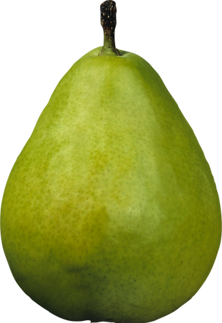

Result.
If you put your mind to something you can do it successfully, but by and large you tend to be fickle and have trouble completing a task with the enthusiasm you started it with. You need to know the results of your efforts almost immediately. You enjoy mental stimulation; and love to get into a good discussion. You tend to be a restless and high-strung person, and are easily excitable. While you are quick to strike up a friendship with someone, maintaining it does not seem to be easy for you.